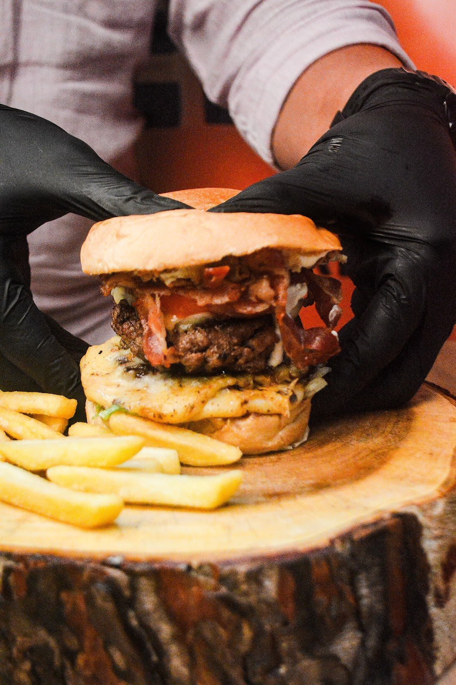

Início · A casa
A casa e quem recebe você
Uma hamburgueria de uma unidade só, com o dono no balcão. “Aquele Artesanal de Respeito!”, como diz a bio da casa.
O dono
Hilton Garcia, no balcão
“O impacto aqui é sentido de imediato porque nós temos a porção de batata gratuita nos combos.”Hilton Garcia, dono do Imperius Burger, ao jornal Correio em 05/07/2024
Na matéria sobre o preço da batata, o Correio apresenta Hilton Garcia como “dono do Imperius Burger, localizado na Vila Laura”. As avaliações do Google lembram o mesmo: o dono recebendo os clientes no local.
Avaliações
4,8 no Google, com 106 avaliações
“Ótimo atendimento, o dono sempre esta no local recepcionando seus clientes com cuidado. O lanche vale o valor, enorme os hambúrgueres e tudo muito gostoso.”Luz L. · Google · há 6 meses
“Muito bom, a Imperius é uma das minhas Hambúrguerias favoritas! Sempre volto, o dono também é uma ótima pessoa e muito gente boa!”Luis G. F. · Google · há um mês
“Tudo muito bom / Hambúrguer muito suculento, ótimo molho e batata frita crocante”Wilze S. · Google · há 6 meses
Trechos literais de avaliações públicas, consultadas em 02/10/2026.
Avaliações deixadas no site
A marca
Deuses, reis e imperadores
Zeus, Hera, Atena, Apollo, Hefesto, Poseidon, Deméter, Dionísio, Thor, o Imperador, Alexandre o Grande, Herodes, Petronius: cada burger do cardápio leva o nome de uma figura de império. O logo laranja e preto e o brasão do letreiro completam o tema.

Contato
Fale com a casa
- WhatsApp: (71) 98754-5000
- Instagram: @imperiusburger_
- Endereço: R. Raul Leite, 279 · Shopping da Vila Laura · Vila Laura, Salvador
- Todos os links: /links
Dúvidas frequentes
Perguntas comuns
A Imperius tem outras unidades?
Não. É uma unidade só, no Shopping da Vila Laura.
Qual é o Instagram oficial?
@imperiusburger_ (com o traço no fim).
Desde quando a casa existe?
O cardápio digital da casa está no ar desde 2021. Pergunte a história ao Hilton no balcão.
Peça agora
Escolha seu deus, monte o combo e peça direto à casa.
Entrega em 20 a 40 minutos (até 8 km), retirada no Shopping da Vila Laura ou mesa no Pub Bistrô. O cardápio da casa calcula a taxa pelo seu endereço.